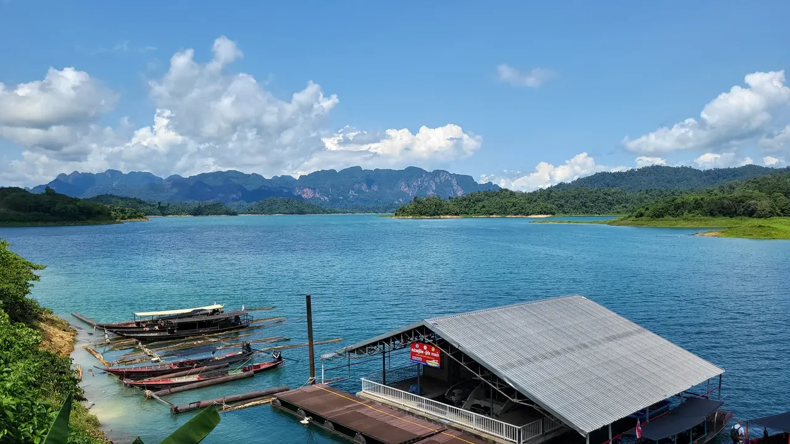

Room to breathe
Four days around Khao Sok showed me how good it can feel to be present without a constant signal or a packed schedule.
Read the Thailand story →Personal stories and small moments from the road. Pick a chapter, or slow down with a field note.

Three months of study, culture, wildlife and new perspectives.

Family, study life, island escapes and an unfiltered reflection.

A separate chapter, with a different rhythm and room for discovery.

Whale sharks and open roads. The full written story is still to come.
These are short notes from trips already on the site. New entries will be added here as new journeys happen.

Four days around Khao Sok showed me how good it can feel to be present without a constant signal or a packed schedule.
Read the Thailand story →
Warunk WOW was a coffee stop by day and a small club at night. The staff and regulars made it feel like a second home.
Read the Bali story →The Philippines chapter is still growing. Whale sharks, scooters and island roads are only the first part of the story.
Open the preview →When a new trip begins, this page becomes the home for the small stories in between the bigger films and blogs.
Discover the next stories and moments as they unfold.
Looking for the Thailand exchange story? Read the complete story →
Open study chapter →Open bangkok chapter →Open pattaya chapter →Open khao sok chapter →Open history chapter →Open wildlife chapter →